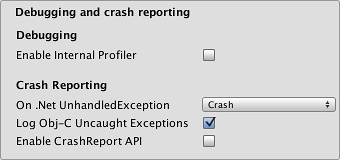

Apple TV Player settings
This page details the Player settings specific to tvOS. For a description of the general Player settings, see Player.

You can find documentation for the properties in the following sections:
Icon
Use the Icon settings to customize the branding for your Apple TV app.

Apple TV images consist of between two and five layers. Unity provides two layers for Apple TV icons.
Note: For more information on layering images for Apple TV, see the Apple Developer documentation on Layered Images.
| Setting | Function |
|---|---|
| App icons | Build the custom icon that you would like to appear on your AppleTV home screen for each resolution (1280x768, 800x480, and 400x240). |
| Top Shelf icons | Build the custom icon that you would like to appear on the AppleTV top shelf for each aspect and resolution (4640x1440, 2320x720, 3840x1440, and 1920x720). |
Resolution and Presentation

Enable the Disable Depth and Stencil option to disable the depth and stencil buffers.
Splash Image
In addition to the common Splash Screen settings, there are two additional settings for the tvOS platform:

Use the AppleTV (1x) and AppleTV (2x) properties to set Apple TV static splash screens.
Debugging and crash reporting

| Setting | Function |
|---|---|
| Enable Internal Profiler (Deprecated) | Enables an internal profiler which collects performance data of the application and prints a report to the console. The report contains the number of milliseconds that it took for each Unity subsystem to execute on each frame. The data is averaged across 30 frames. |
| On .Net UnhandledException | The action taken on .NET unhandled exception. The options are Crash (the application crashes hardly and forces tvOS to generate a crash report that can be submitted to iTunes by app users and inspected by developers), Silent Exit (the application exits gracefully). |
| Log Obj-C Uncaught Exceptions | Enables a custom Objective-C Uncaught Exception handler, which prints exception information to console. |
| Enable Crash Report API | Enables a custom crash reporter to capture crashes. Crash logs are available to scripts via CrashReport API. |
Other Settings
This section allows you to customize a range of options organized into the following groups:
Rendering
Use these settings to customize how Unity renders your game for Standalone platforms.

| Setting | Function | |
|---|---|---|
| Color Space | Choose which color space should be used for rendering: Gamma or Linear. See the Linear rendering overview for an explanation of the difference between the two. |
|
| Auto Graphics API | Disable this option to manually pick and reorder the graphics APIs. By default this option is enabled, and Unity includes Metal, and GLES2 as a fallback for devices where Metal is not supported. | |
| Color Gamut | You can add or remove color gamuts for the iOS platform to use for rendering. Click the plus (+) icon to see a list of available gamuts. A color gamut defines a possible range of colors available for a given device (such as a monitor or screen). The sRGB gamut is the default (and required) gamut. When targeting recent tvOS devices with wide color gamut displays, use DisplayP3 to utilize full display capabilities. Use Metal Editor Support as a fallback for older devices. |
|
| Metal Editor Support | Enable this option to use the Metal API in the Unity Editor and unlock faster Shader iteration for targeting the Metal API. | |
| Metal API Validation | Enable this option when you need to debug Shader issues. Note: Validation increases CPU usage, so use it only for debugging. |
|
| Metal Write-Only Backbuffer | Allow improved performance in non-default device orientation. This sets the frameBufferOnly flag on the back buffer, which prevents readback from the back buffer but enables some driver optimization. | |
| Force hard shadows on Metal | Enable this option to force Unity to use point sampling for shadows on Metal. This reduces shadow quality, which should give better performance. | |
| Memoryless Depth | Choose when to use memoryless render textures. Memoryless render textures are temporarily stored in the on-tile memory when rendered, not in CPU or GPU memory. This reduces memory usage of your app but you cannot read or write to these render textures. Note: Memoryless render textures are only supported on tvOS, tvOS 10.0+ Metal and Vulkan. Render textures are read/write protected and stored in CPU or GPU memory on other platforms. |
|
| Unused | Never use memoryless framebuffer depth. | |
| Forced | Always use memoryless framebuffer depth. | |
| Automatic | Let Unity decide when to use memoryless framebuffer depth. | |
| Multithreaded Rendering | Enable this option to use multithreaded rendering. This is only supported on Metal. | |
| Static Batching | Enable this option to use Static batching. | |
| Dynamic Batching | Check this box to use Dynamic Batching on your build (enabled by default). | |
| GPU Skinning | Enable this option to use DX11/ES3 GPU skinning. | |
| Graphics Jobs (Experimental) | Enable this option to instruct Unity to offload graphics tasks (render loops) to worker threads running on other CPU cores. This is intended to reduce the time spent in Camera.Render on the main thread, which is often a bottleneck. Note: This feature is experimental. It may not deliver a performance improvement for your project, and may introduce new crashes. |
|
| Lightmap Streaming Enabled | Enable this option to load only the lightmap mip maps as needed to render the current game Cameras. This value applies to the lightmap textures as they are generated. Note: To use this setting, you must enable the Texture Streaming Quality setting. |
|
| Streaming Priority | Set the lightmap mip map streaming priority to resolve resource conflicts. These values are applied to the light map textures as they are generated. Positive numbers give higher priority. Valid values range from -128 to 127. |
|
| Enable Frame Timing Stats | Enable this option to gather CPU/GPU frame timing statistics. |
Identification

| Setting | Function |
|---|---|
| Bundle Identifier | Enter the provisioning profile of the game or product you are building. The basic structure of the identifier is com.CompanyName.ProductName. This structure may vary internationally based on where you live, so always default to the string provided to you by Apple for your Developer Account. Your ProductName is set up in your provisioning certificates. This value appears as CFBundleIdentifier in the associated info.plist file. See the Apple developer documentation on CFBundleIdentifier to learn more. Note: This is shared between iOS, tvOS and Android. |
| Version | Enter the release-version-number string for the bundle (for example, 4.3.6). This appears as CFBundleShortVersionString in the associated info.plist file.See the Apple developer documentation on CFBundleShortVersionString to learn more. |
| Build | Enter the build number for this version of your app. This appears as CFBundleVersion in the associated info.plist file.See the Apple developer documentation on CFBundleVersion to learn more. |
| Signing Team ID | Enter your Apple Developer Team ID. You can find this on the Apple Developer website under Xcode Help. This sets the Team ID for the generated Xcode project, allowing developers to use the Build and Run functionality. An Apple Developer Team ID must be set here for automatic signing of your app. For more information, see Creating Your Team Provisioning Profile. |
| Automatically Sign | Enable this option to allow Xcode to automatically sign your build. |
Configuration

| Setting | Function | |
|---|---|---|
| Scripting Runtime Version | Choose which .NET runtime to use in your project. For more details, see Microsoft's .NET documentation. | |
| .NET 3.5 Equivalent (Deprecated) | A .NET runtime which implements the .NET 3.5 API. This functionality is deprecated, and should no longer be used. Please use .NET 4. | |
| .NET 4.x Equivalent | A .NET runtime which implements the .NET 4 API. This API is newer than .NET 3.5, and as such, it offers access to more APIs, is compatible with more external libraries, and supports C# 6. This is the default scripting runtime. | |
| Scripting Backend | Choose the scripting backend you want to use. This setting is not enabled for tvOS. | |
| API Compatibility Level | There are two options for API compatibility level: .NET 4.0, or .NET Standard 2.0. Tip: If you are having problems with a third-party assembly, you can try the suggestion in the API Compatibility Level section below. |
|
| C++ Compiler Configuration | Choose the C++ compiler configuration used when compiling IL2CPP generated code. This setting is not enabled for tvOS. | |
| Use on Demand Resource | Enable this option to use on-demand resources. This setting has no effect for tvOS. |
|
| Accelerometer Frequency | Define how often to sample the accelerometer. If you choose Disabled, then no samples are taken. Otherwise, you can choose from 15Hz, 30Hz, 60Hz and 100Hz frequencies. | |
| Camera Usage Description | Enter the reason for accessing the camera on the tvOS device. | |
| Location Usage Description | Enter the reason for accessing the location of the tvOS device. | |
| Microphone Usage Description | Enter the reason for accessing the microphone on the tvOS device. | |
| Mute Other Audio Sources | Enable this option if you want your Unity application to stop Audio from applications running in the background. Otherise, Audio from background applications continues to play alongside your Unity application. | |
| Requires Persistent WiFi | Enable this option to require a Wi-Fi connection. tvOS maintains the active Wi-Fi connection while the application is running. | |
| Allow downloads over HTTP (nonsecure) | Enable this option to allow downloading content over HTTP. Default and recommended is HTTPS. | |
| Supported URL schemes | A list of supported URL schemes. To add new schemes, increase the value of the Size property and then set a reference to the Asset to load in the new Element box that appears. |
|
| Disable HW Statistics | Enable this option to instruct the application not to send information about the hardware to Unity. For more details, see Unity Hardware Statistics. | |
| Target SDK | Select which SDK the game targets. The choices are Device SDK and Simulator SDK. Note: Be sure to select the correct SDK. For example, if you select the Device SDK but then target the Simulator in Xcode then the build will fail with a lot of error messages. |
|
| Target minimum tvOS Version | Defines the minimum version of tvOS that the game works on. | |
| Architecture | Choose which architecture to target. This setting is not enabled for tvOS because it changes automatically depending on the value set for the Target SDK property. | |
| Require Exended Game Controller | Enable this if your app requires a game controller. For more information, see the Apple Developer documentation on Game Controllers. | |
| Scripting Define Symbols | Set custom compilation flags. For more details, see Platform dependent compilation. | |
| Allow 'unsafe' Code | Enable support for compiling ‘unsafe’ C# code in a pre-defined assembly (for example, Assembly-CSharp.dll). For Assembly Definition Files ( .asmdef), click on one of your .asmdef files and enable the option in the Inspector window that appears. |
|
| Active Input Handling | Choose how you want to handle input from users. | |
| Input Manager | Use the traditional Input window. | |
| Input System (Preview) | Use the Input system. The Input System is provided as a preview package for this release. To try a preview of the Input System, install the InputSystem package. | |
| Both | Use both systems side by side. |
API Compatibility Level
You can choose your mono API compatibility level for all targets. Sometimes a 3rd-party .NET library uses functionality that is outside of your .NET compatibility level. In order to understand what is going on in such cases, and how to best fix it, try following these suggestions:
- Install Reflector for Windows.
- Drag the .NET assemblies for the API compatilibity level you are having issues with into Reflector. You can find these under
Frameworks/Mono/lib/mono/YOURSUBSET/. - Drag in your 3rd-party assembly.
- Right-click your 3rd-party assembly and select Analyze.
- In the analysis report, inspect the Depends on section. The report highlights anything that the 3rd-party assembly depends on, but that is not available in the .NET compatibility level of your choice in red.
Optimization

| Setting | Function | |
|---|---|---|
| Prebake Collision Meshes | Enable this option to add collision data to Meshes at build time. | |
| Keep Loaded Shaders Alive | Enable this option to prevent shaders from being unloaded. | |
| Preloaded Assets | Set an array of Assets for the player to load on startup. To add new Assets, increase the value of the Size property and then set a reference to the Asset to load in the new Element box that appears. |
|
| AOT compilation options | Additional options for Ahead of Time (AOT) compilation. This helps optimize the size of the built tvOS player. | |
| Strip Engine Code | Enable code stripping. This setting is only available with the IL2CPP Scripting Backend. Most games don't use all necessary DLLs. With the Strip Engine Code option enabled, you can strip out unused parts to reduce the size of the built player on tvOS devices. If your game is using classes that would normally be stripped out by the option you currently have selected, you'll be presented with a Debug message when you make a build. |
|
| Managed Stripping Level | Choose how aggressively Unity strips unused managed (C#) code. | |
| Normal | Remove unreachable managed code to reduce build size and .NET/IL2CPP build times. | |
| Aggressive | Run UnityLinker in a less conservative mode than normal, reducing code size even further than what Normal can achieve. However, this additional reduction may come with tradeoffs. For more information, see ManagedStrippingLevel. | |
| Script Call Optimization | Choose how to optionally disable exception handling for a speed boost at runtime. See iOS Optimization for details. | |
| Slow and Safe | Use full exception handling (with some performance impact on the device when using the Mono scripting backend). | |
| Fast but no Exceptions | No data provided for exceptions on the device (the game runs faster when using the Mono scripting backend). Note: Using this option with the IL2CPP Scripting Backend does not impact performance; however, using it can avoid undefined behavior on release builds. |
|
| Vertex Compression | Set vertex compression per channel. For example, you can enable compression for everything except positions and lightmap UVs. Whole Mesh compression set per imported object overrides where vertex compression is set on objects. Everything else obeys these vertex compression settings. | |
| Optimize Mesh Data | Enable this option to remove any data from Meshes that is not required by the Material applied to them (such as tangents, normals, colors, and UVs). |
Logging
Select what type of logging to allow in specific contexts.

Check one box that corresponds to each Log Type (Error, Assert, Warning, Log, and Exception) when running scripts (ScriptOnly) , all the time (Full), or never (None).
Legacy
Enable the Clamp BlendShapes (Deprecated) option to clamp the range of Blend Shape weights in SkinnedMeshRenderers.